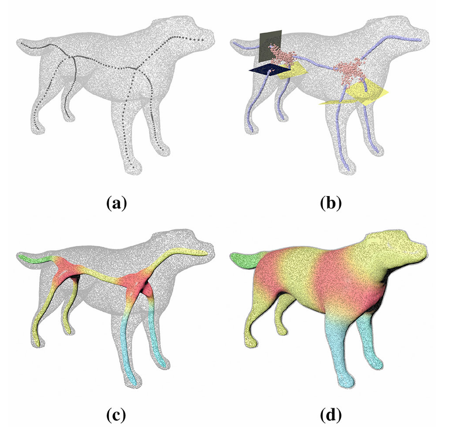
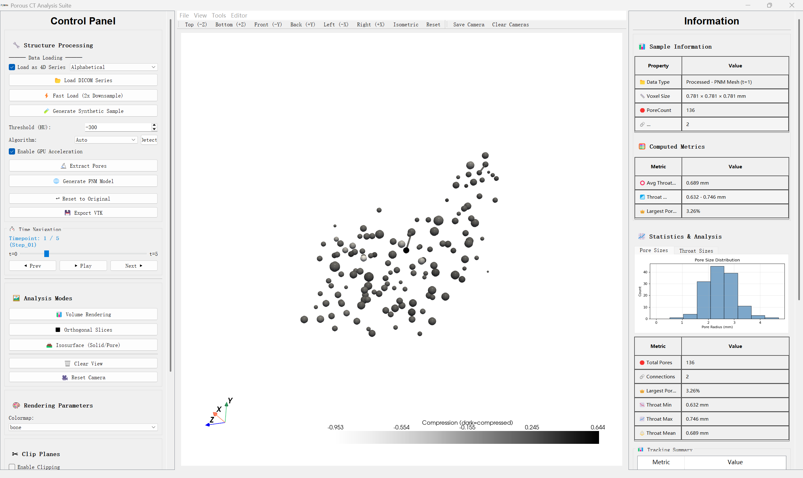
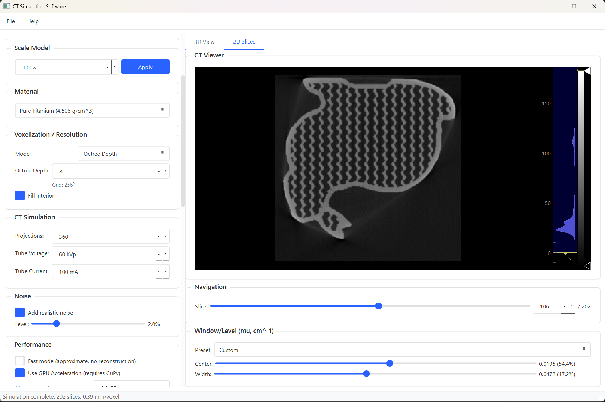
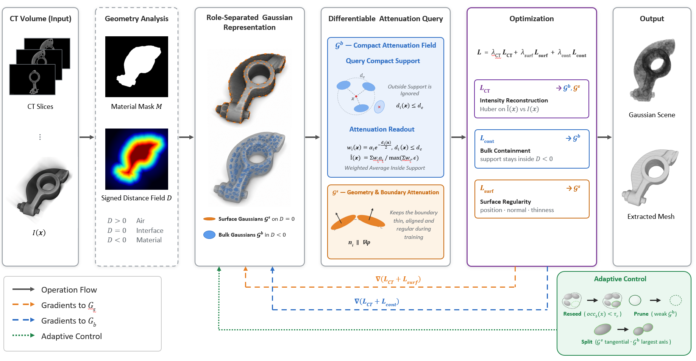
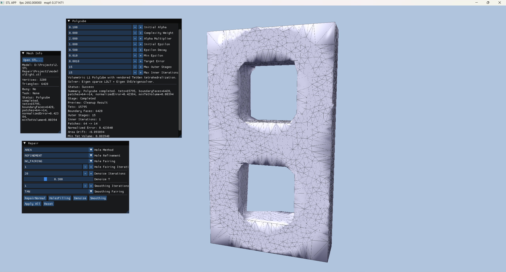

About Me
Hi there, I am Shuyang Zhu (Chinese name: 朱舒阳). I am currently a graduate student at the Graduate School of Nuclear Engineering and Management at the University of Tokyo, under the supervision of Prof. Yukie Nagai. I received my B.E. in Digital Media Technology from Lanzhou University.
My research interests center on Surface Modeling and high-performance CT Reconstruction. Specifically, I focus on:
- 3D mesh reconstruction and processing such as Polycube Parameterization
- Micro-CT pore structure analysis and 4D temporal tracking
- High-performance 3D reconstruction using CUDA
- Developing easy-to-use software for research and applications
My work aims to bridge algorithmic research and practical system development, building reproducible and scalable toolchains for analysis of complex models.
I am always open to collaborations and searching for internships. Feel free to reach out at derulozsy@gmail.com.
Publications

An automatic framework for quadrilateral surface reconstruction with partitions from 3D point clouds
Shuyang Zhu · Youlong Li · Jizhao Liu · Bin Li*
- Inspired by Polycube Parameterization, we propose a 4-step framework for reconstructing 3D point cloud models into quadrilateral meshes with smooth partitions.
- The resulting meshes faithfully preserve the original geometric features of the input point cloud, making them well-suited for applications such as rigging.
Projects

Porous CT Processor (Ongoing)
Pore Network Modeling + 4DCT Analysis
- An easy-to-use analysis and visualization suite for porous CT data analysis with GUI.
- Features include various kinds of rendering, pore network modeling (PNM), and 4D tracking of pore evolution.
- Optimized with GPU acceleration (CuPy) for faster processing of large datasets.

CT Simulation Software (Ongoing)
High-Accuracy and Customizable CT Simulation
- Simulates CT scans from 3D models with physical accuracy.
- Includes lattice generation, defect injection, and physics-based compression simulation using FEM.
- GPU support with dynamic batching for handling large volumes.

CTGS (Ongoing)
Gaussian Splatting Specifically Designed for Industrial CT
- A pipeline that turns CT volumes into a Gaussian Splatting representation.
- Focuses on CT internal structures such as voids and material density variations, as well as shape alignment, for downstream analysis workflows.
- Uses a hybrid Gaussian model with CT-specific slice supervision, geometric regularization, and native CUDA acceleration for efficient volume-based training.

STL Processor
DirectX 12 Mesh Processing & Visualization
- A DirectX 12 application for STL mesh repair and visualization; rendering implemented with reference to Introduction to 3D Game Programming with Direct3D 12.0.
- Supports Polycube parameterization, reproducing the method from ℓ1-Based Construction of Polycube Maps.
- Includes hole filling, normal correction, denoising, and smoothing.
- CPU Design Collection, A collection of Vivado hardware design projects for computer organization coursework, implementing single-cycle and 5-step pipeline CPU architectures design.
- Algorithms Visualization Collection, A collection of algorithm implementations and visualizations with godot, including search algorithms, graph algorithms, and tree algorithms.
- Minimalist Clipboard Editor, A minimalist clipboard editor with Markdown support for quickly revising AI-generated content.
Awards
- 2025: The University of Tokyo Fellowship.
- 2024: Lanzhou University Third-Class Scholarship.
- 2023: 9th "Internet+" Innovation and Entrepreneurship Competition, Gansu Province Gold Award. Lanzhou University Second-Class Scholarship.
- 2022: 13th BlueBridge Cup, Gansu Province Third Prize. Lanzhou University Second-Class Scholarship.
Education
- 2025.10 – Present: Graduate School of Nuclear Engineering and Management, the University of Tokyo, Tokyo, Japan.
- 2024.10 – 2025.03: Special Auditor, Dept. of Electronics and Information Engineering, Hokkaido University, Sapporo, Japan.
- 2021.09 – 2025.07: B.E. in Digital Media Technology, Lanzhou University, Lanzhou, China.
关于我
你好，我是朱舒阳。目前就读于东京大学原子力国际专攻，师从长井超慧准教授。本科就读于兰州大学数字与媒体技术专业。
研究方向集中于曲面建模与高性能 CT 重建，具体包括：
- 三维网格重建与处理，如 Polycube 参数化
- CT 孔隙结构分析与 4D 时序追踪
- 基于 CUDA 的高性能三维重建
- 面向科研与分析的软件开发
我致力于将算法研究与工程实践相结合，构建可复现、可扩展的复杂模型分析工具链。
欢迎合作交流，也正在寻找实习机会，联系邮箱：derulozsy@gmail.com。
发表
An automatic framework for quadrilateral surface reconstruction with partitions from 3D point clouds
Shuyang Zhu · Youlong Li · Jizhao Liu · Bin Li*
- 受 Polycube 参数化启发，提出包含四个步骤的框架将三维点云重建为带有光滑分区的四边形网格，步骤包含一维骨架提取、骨架驱动分割、初始网格生成与进化式重建。
- 重建结果能良好保留点云原始几何特征，便于骨骼绑定等应用。
项目
多孔介质 CT 处理器
孔隙网络建模 + 4D CT 分析
- 一款带有图形界面、易于上手的多孔介质 CT 数据分析与可视化工具套件。
- 支持多种渲染方式、孔隙网络建模（PNM）及孔隙演化的 4D 时序追踪。
- 通过 CuPy GPU 加速优化算法，提升大规模数据集的处理效率。
CT 模拟软件
高精度可定制化 CT 仿真
- 基于三维模型，以物理精度模拟 CT 扫描全过程。
- 内置晶格结构生成、缺陷注入及基于有限元法（FEM）的物理压缩仿真功能。
- 支持 GPU 加速与动态批处理，可高效处理大体积数据。
CTGS
面向工业 CT 专门设计的 Gaussian Splatting
- 一条将 CT 体数据转换为 Gaussian Splatting 表示的完整流程。
- 关注 CT 内部构造（如空洞、材质密度不同等）和表面拟合（shape alignment）等问题，方便后续分析工作流。
- 采用混合高斯模型，结合 CT 特定的切片监督、几何正则化与原生 CUDA 加速，实现高效的体数据训练。
STL 处理工具
DirectX 12 网格处理与可视化
- 基于 DirectX 12 的 STL 网格修复与可视化应用程序，渲染实现参考 Introduction to 3D Game Programming with Direct3D 12.0。
- 支持 Polycube 参数化，复现了 ℓ1-Based Construction of Polycube Maps 中的方法。
- 包含孔洞填补、法向量纠正、降噪及平滑处理功能。
- CPU 设计合集, Vivado 硬件设计项目合集，用于计算机组织课程，实现单周期和 5 步流水线 CPU 架构设计。
- 算法可视化合集, 使用 Godot 的算法实现与可视化合集，包括搜索算法、图算法和树算法。
- 极简剪贴板编辑器, 一个支持编辑与 Markdown 的极简剪贴板，方便快速整理和修改 AI 生成内容。
奖项
- 2025：东京大学Fellowship（University of Tokyo Fellowship）。
- 2024：兰州大学三等奖学金。
- 2023：第九届"互联网+"创新创业大赛甘肃省金奖。 兰州大学二等奖学金。
- 2022：第十三届蓝桥杯甘肃省三等奖。 兰州大学二等奖学金。
教育经历
- 2025.10 – 至今：修士在读，东京大学 工学系研究科 原子力国际专攻，东京，日本。
- 2024.10 – 2025.03：特别听讲学生，北海道大学 工学部 情报电子工学科，札幌，日本。
- 2021.09 – 2025.07：工学学士，兰州大学 新闻与传播学院 数字媒体技术专业，兰州，中国。
自己紹介
はじめまして、朱舒阳（シュ シュヨウ）と申します。現在、東京大学大学院工学系研究科原子力国際専攻の修士課程に在籍し、长井超慧准教授の指導のもとで研究しています。学部（デジタルメディア技術）は蘭州大学を卒業しました（2021.09 – 2025.07）。
研究趣味はサーフェスモデリングと高性能 CT 再構成にあり、具体的には以下の分野に取り組んでいます：
- Polycube パラメータ化などの三次元メッシュ再構成・処理
- マイクロ CT による孔隙構造解析と 4D 時系列追跡
- CUDA を用いた高性能三次元再構成
- 研究・応用向けの使いやすいソフトウェア開発
アルゴリズム研究と実用的なシステム開発を橋渡しし、複雑な構造の定量解析のための再現可能なツールチェーンの構築を目指しています。
共同研究やインターンシップを随時募集しています。お気軽にご連絡ください：derulozsy@gmail.com
発表
An automatic framework for quadrilateral surface reconstruction with partitions from 3D point clouds
Shuyang Zhu · Youlong Li · Jizhao Liu · Bin Li*
- Polycube パラメータ化に着想を得て、三次元点群モデルをなめらかなパーティション付き四辺形メッシュに再構成する 4 ステップのフレームワーク（1D スケルトン抽出・スケルトン駆動分割・初期メッシュ生成・進化的再構成）を提案。
- 生成されたメッシュは元の点群の幾何学的特徴を忠実に保持し、スキニングなどの用途に適しています。
プロジェクト
多孔質 CT プロセッサ
孔隙ネットワークモデリング + 4D CT 解析
- GUI を備えた、多孔質 CT データの解析・可視化のための使いやすいスイート。
- 各種レンダリング、孔隙ネットワークモデリング（PNM）、孔隙進化の 4D 追跡機能を搭載。
- CuPy による GPU 高速化で大規模データセットの処理速度を最適化。
CT シミュレーションソフトウェア
高精度・カスタマイズ可能な CT シミュレーション
- 3D モデルから物理的精度で CT スキャンをシミュレート。
- 格子構造生成・欠陥注入・FEM を用いた物理ベースの圧縮シミュレーションを含む。
- 動的バッチ処理による GPU サポートで大規模ボリュームの処理に対応。
CTGS
工業用 CT 向けに設計した Gaussian Splatting
- CT ボリュームを Gaussian Splatting 表現へ変換するパイプライン。
- 空隙や材質密度の違いなどの CT 内部構造と、表面フィッティングに着目し、後続の解析ワークフローに活用しやすくしています。
- ハイブリッド Gaussian モデルに、CT 固有のスライス監督、幾何正則化、ネイティブ CUDA 高速化を組み合わせ、効率的な体積ベース学習を実現。
STL プロセッサ
DirectX 12 メッシュ処理・可視化
- STL メッシュ修復と可視化のための DirectX 12 アプリケーション。レンダリングは Introduction to 3D Game Programming with Direct3D 12.0 を参考に実装。
- Polycube パラメータ化をサポートし、ℓ1-Based Construction of Polycube Maps の手法を再現。
- 穴埋め、法線補正、ノイズ除去、平滑化機能を搭載。
- CPU デザイン コレクション, コンピュータ組織学の講義向け Vivado ハードウェア設計プロジェクト集。単一サイクルと 5 段パイプライン CPU アーキテクチャ設計を実装。
- アルゴリズム可視化コレクション, Godot を用いたアルゴリズム実装と可視化のコレクション。検索アルゴリズム、グラフアルゴリズム、ツリーアルゴリズムを含む。
- ミニマル クリップボードエディタ, 編集と Markdown に対応した極簡素なクリップボードで、AI 生成コンテンツの修正を手早く行えるツールです。
受賞歴
- 2025：東京大学フェローシップ（University of Tokyo Fellowship）。
- 2024：蘭州大学三等奨学金。
- 2023：第 9 回「インターネット+」イノベーション・起業コンテスト 甘粛省金賞。 蘭州大学二等奨学金。
- 2022：第 13 回ブルーブリッジカップ 甘粛省三等賞。 蘭州大学二等奨学金。
学歴
- 2025.10 – 現在：修士在籍、東京大学 大学院工学系研究科 原子力国際専攻、東京、日本。
- 2024.10 – 2025.03：特別聴講学生、北海道大学 工学部 情報エレクトロニクス学科、札幌、日本。
- 2021.09 – 2025.07：工学学士、蘭州大学 新聞与伝播学院 デジタルメディア技術専攻、蘭州、中国。